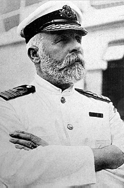

--- Les passagers emblématiques ---

Molly Brown
Une passagère de première classe, célèbre pour son courage lors du naufrage.

Edward J. Smith
Capitaine du Titanic, respecté pour son expérience et son calme.

Thomas Andrews
Architecte du Titanic, présent pour superviser le voyage inaugural.